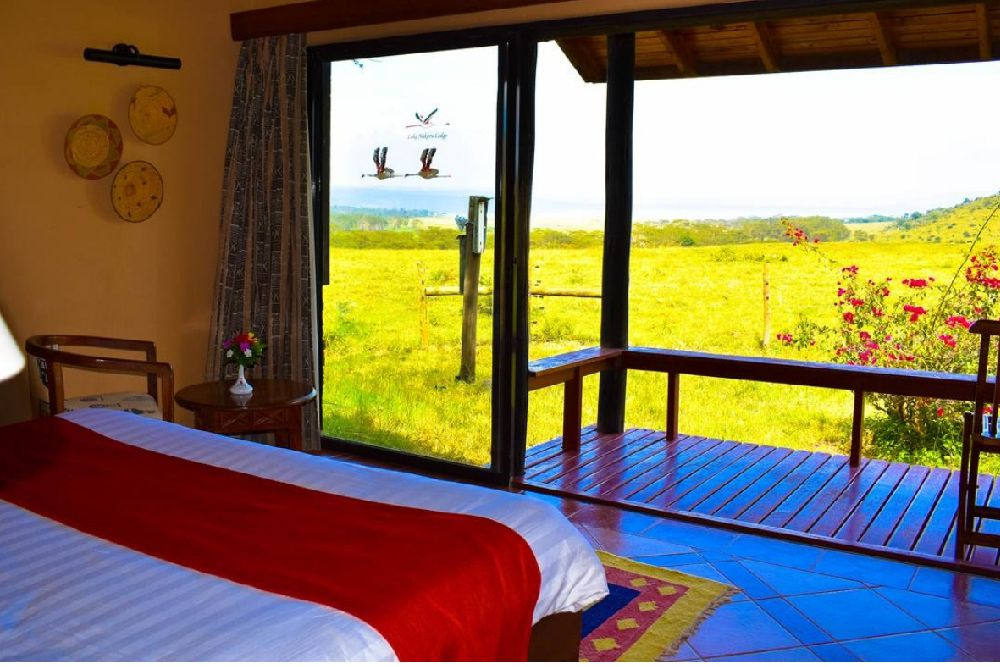
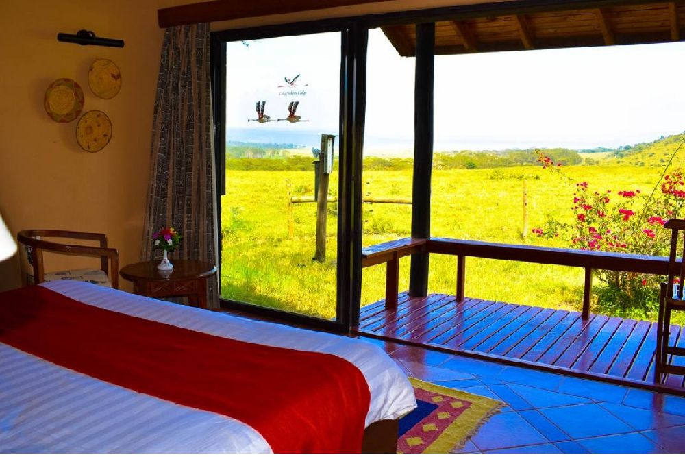

- Home
- Safaris Tours
- Great Lakes 6 days 5 nights Tour


 

Great Lakes 6 days 5 nights
Experience the beautiful lakes and indigenous animals in their ecosystems in Lake Bogoria National Reserve and Lake Nakuru National Park.
DETAILED ITINERARY
Day 1: Nairobi- Lake Bogoria National Reserve
We start our safari by driving to Lake Bogoria. Although there's plenty of wildlife in and around Lake Bogoria, it tends to make itself scarce, with the exception of the flamingos at the hot springs. Most animals - including buffalo, hyena, klipspringer, impala, dik-dik, zebra, warthog and Grant's gazelle - prefer the remote and inaccessible eastern shore, though you may see greater kudu just about anywhere. The flamingos, for some curious reason - possibly chemical - tend to flock in their greatest numbers to the shallows on the western shore, where the hot springs flow into the lake (they appear immune to the heat). The Bogoria fish eagles have made a gruesome adjustment to their fierce, fishless environment: they prey on flamingos. Other birds to look out for include avocets, transitory pelicans and migratory steppe eagles. Dinner and overnight at campsite or lodge.
Day 2: Lake Bogoria National Reserve- Lake Nakuru National Park
Early morning pick up, then drive to Lake Nakuru National Park, across the equator, southwards of Bogoria, lies the rift valleys most famous lake Nakuru. Known all over the world for its flamingoes, it's alkaline and is recognized as being one of the natural wonders of the world. Lake Nakuru is now a rhino sanctuary, harbouring a population of over 40 black and over 60 white rhinos, but the flamingoes, of course, have always been the main attraction. At times there may be almost 2 million flamingoes in the residence, forming a stunningly beautiful deep pink band around the edge of the lake shore. Arrive in time for lunch then have an afternoon game drive. Dinner and overnight at campsite or lodge.
Day 3: Lake Nakuru National Park-Maasai Mara National Reserve
Full days of game drive in Mara. After breakfast, we have a full day game drive, with packed lunch provided. The reserve is well known for its black-manned lion, as well as its abundant resident wildlife and its one of the few places where it's possible to see the big five during a morning's game drive. Many of the cheetahs are so tame they seek shelter from the hot sun under one's vehicle and several even climb onto the roof to get a better view of prospective prey. For the bird enthusiast, almost 500 species have been recorded: among these 16 species of eagle, plus many hawks and falcons, 6 species of vultures, 8 species of storks 4 of bustard (including the Kori bustard, the world's heaviest flying bird), and 9 species of sunbirds. Dinner and overnight at campsite or lodge.
Day 4 & 5: Maasai Mara
Full days of game drive in Mara. After breakfast, we have a full day game drive, with packed lunch provided. The reserve is well known for its black-manned lion, as well as its abundant resident wildlife and its one of the few places where it's possible to see the big five during a morning's game drive. Many of the cheetahs are so tame they seek shelter from the hot sun under one's vehicle and several even climb onto the roof to get a better view of prospective prey. For the bird enthusiast, almost 500 species have been recorded: among these 16 species of eagle, plus many hawks and falcons, 6 species of vultures, 8 species of storks 4 of bustard (including the Kori bustard, the world's heaviest flying bird), and 9 species of sunbirds. Dinner and overnight at campsite or lodge.
Day 6: Maasai Mara National Reserve-Nairobi
We wake up at 6 am for a sunrise game drive. At 9 am, we drive back to accommodation for brunch then depart for Nairobi. Lunch en-route and arrival in Nairobi in the late afternoon.